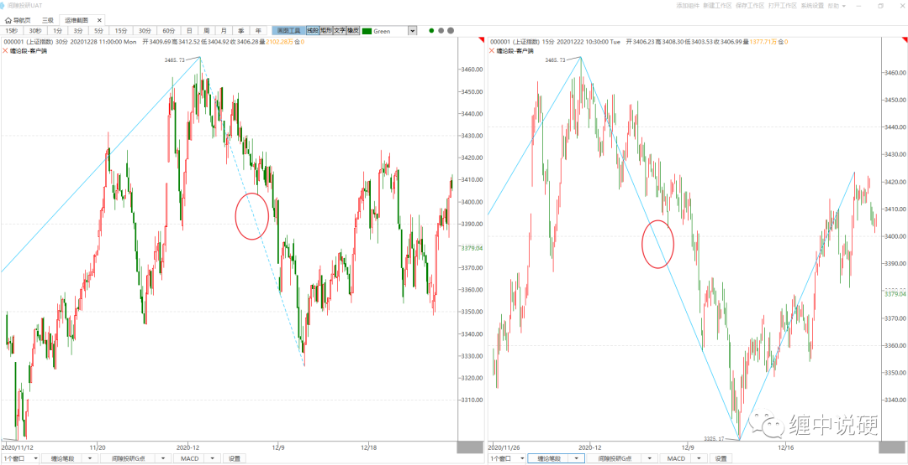
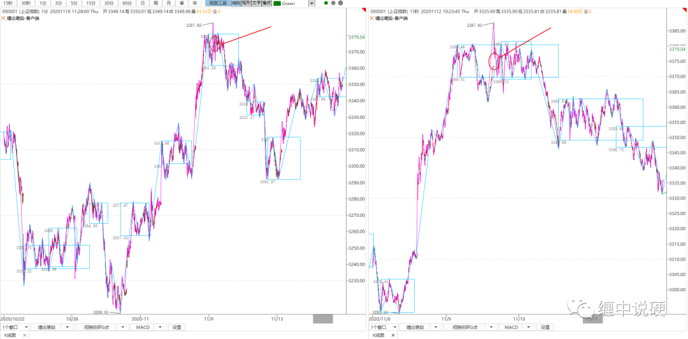
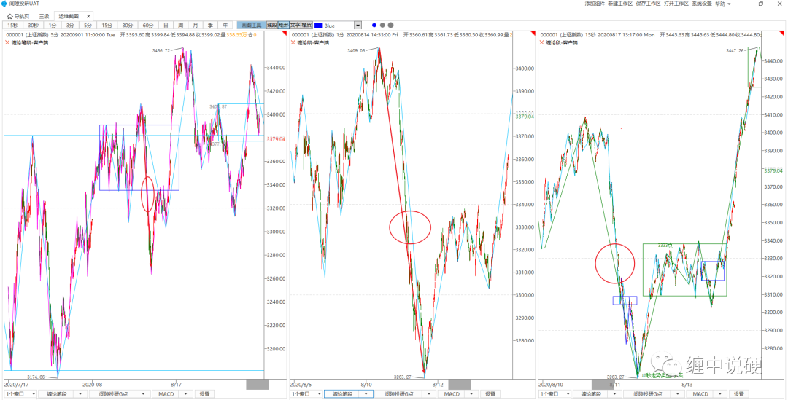

怎么理解大级别段和小级别段重合

缠论的分析过程中，你是否发现很多时候，大级别段和小级别段是重合，比如上图30分钟k线上画段，和15分钟k线上画段，两者是完全重合的，我认为归根到底，是因为走势比较流畅，小级别没有足够细节，但波动足够大造成的。
先回顾一下定义：
1：围绕中枢的震荡可以是任意级别的震荡；
2：连接两个中枢的链接段，可以是任意级别的走势，最低可以是跳空缺口；
3：任意小级别的背驰都可能导致本级别走势结束；（这里是简单的说法，实际有非常严格的定义去判断小级别背驰导致本级别走势结束。）
碰到这种情况，该如何处理？

上图1分钟段和15秒段重合，上图中，可以这么理解：1分钟图是和15秒图还是其他图重合了，其实都无所谓，我们得到的信息是：最后的1分钟段，必然不可能是本级别的背驰点，此时就去找次级别的三卖，然后找本级别的2卖判断走势结束。

上图左边围绕5分钟中枢震荡，5分钟图上观察是一个直愣愣的下跌，1分钟图上观察是一个明显不背驰的下跌，15秒图上观察可以发现这是一个明显的15秒趋势背驰。
围绕中枢可以是任意级别的波动，此时15秒图上出现一买，自然可以做一个15秒级别的反弹。